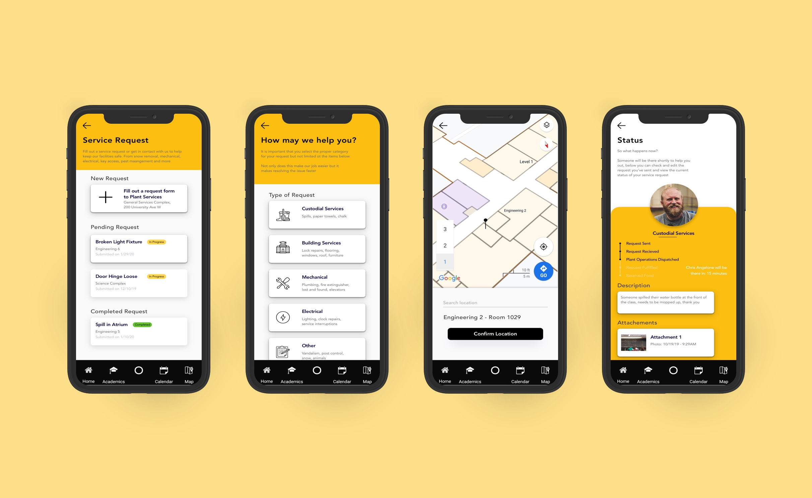
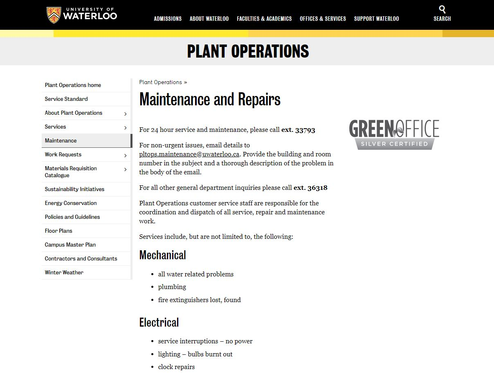
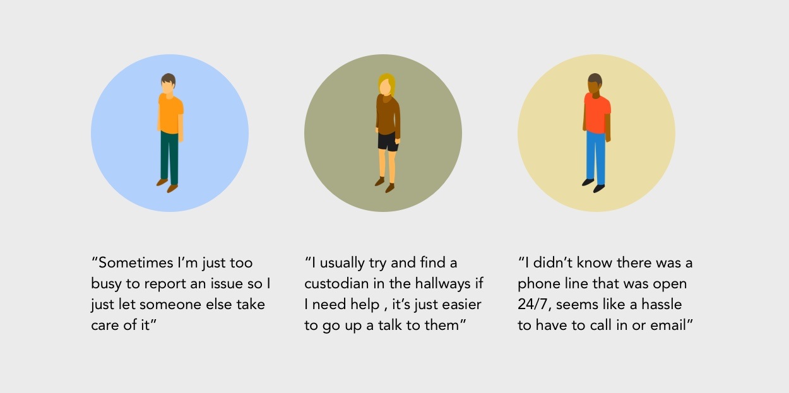
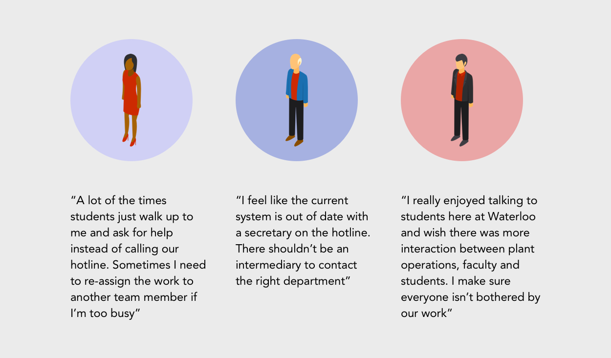
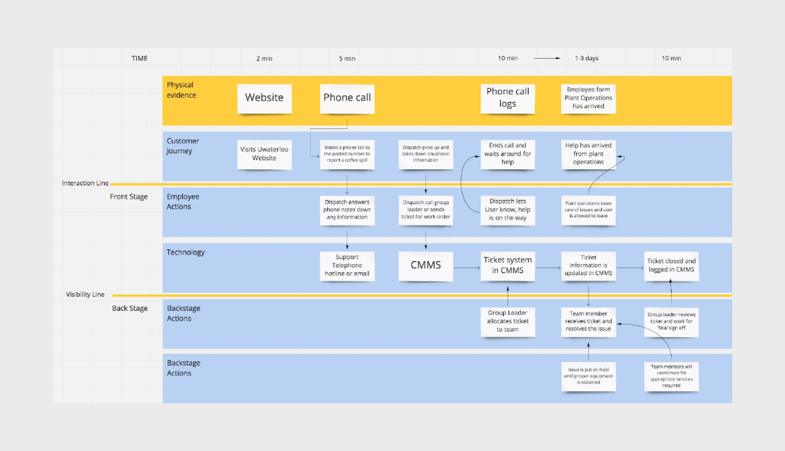
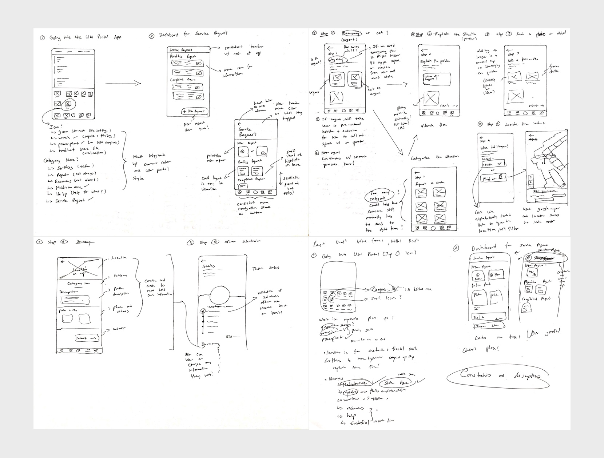
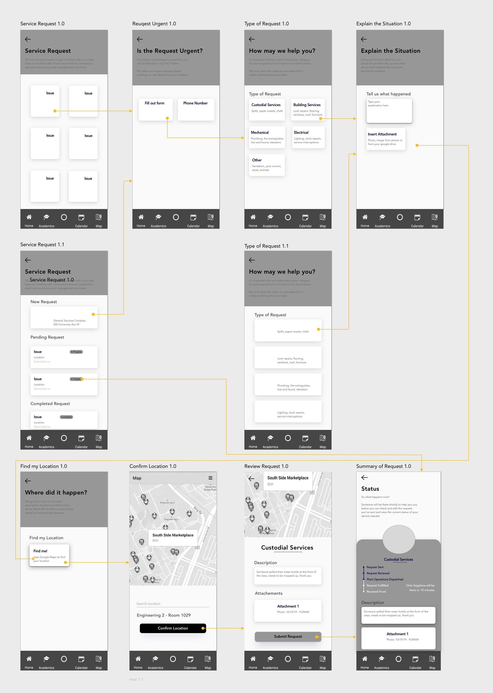
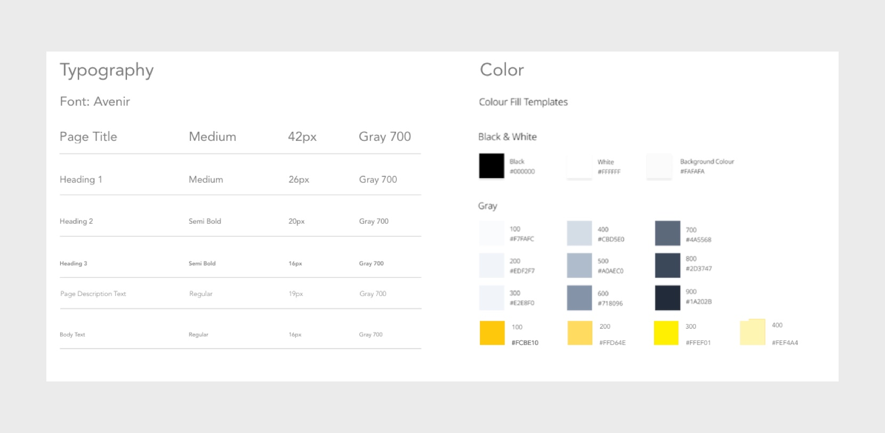
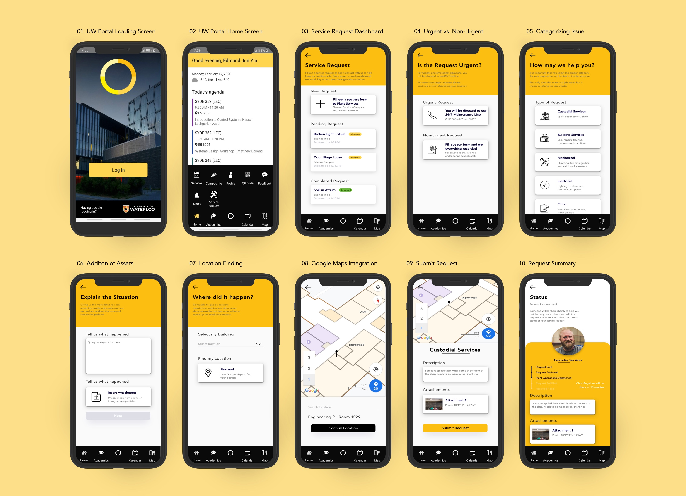

The University of Waterloo is showing signs of deterioration and aging after decades of use. The university wishes to design a new experience that allows students to help report building or equipment issues on campus. Students can currently report issues but the lack of communication and poor response times hinders the adoption amongst students.
Therefore, an additional Service Request feature was designed with the intention to provide a convenient and intuitive front-facing user interface that leverages the current UW Portal application to encourage the utilization of plant operations.

High fidelity prototype of service request feature
Our design challenge goal is to design an experience that allows students to report building or equipment issues on campus, considering for the process of filing and acting on the issues. It is visible that the university’s campus is aging due to daily use with constant repairs which need to be done with limited staff and budget.
For the past decade, students have the option of calling a 24/7 hotline for urgent issues or send an email to the school for non-urgent issues. However, due to low site visibility, poor communication and slow response times it is difficult for users to be proactive in taking responsibility to report problems on campus. Thus, resulting in poor campus maintenance and further deterioration of the university’s buildings.

Current webpage to report campus maintenance issues
To increase overall campus health and safety, the new service request feature must be convenient, efficient, safe, accessible and provide a variety of options to help report issues on campus. The new system must be able to integrate within student workflows and increase communication between plant operations staff and students. The new system must work 24/7 all year-round and be integrated within the University’s current ecosystem of applications.
Using the Microsoft’s Desirability toolkit, I was able to make a list of user experience goals that I wanted users to feel when using the new system. This toolkit assisted in identifying what emotions we want to elicit from the user before, during and after the use of the system, resulting in the following user experience goals
I reached out to the Universities Plant Operations office and got in touch with the plant operations manager Jennifer Letson. After a series of emails and conversations I learned that university receives on average 30+ requests per week from issues ranging from mechanical issues to coffee spills in classrooms which then need to be manually assigned to the appropriate team. What Jennifer believes is that the university should have a better system that allows students to report issues efficiently, is effective in helping maintain the campus and is accessible to all members of the university to use.
To understand what current user pain points exist in the service, I conducted 6 user interviews with students and staff who previously had interactions with plant services. Below are quotes extracted from user interviews, capturing their overall sentiment.

Quotes extracted from user interviews with students

Quotes extracted from user interviews with plant operations employees
With the help of Plant Operations Manger Jennifer Letson, I was able to construct a service design blueprint containing behind the scenes technologies and actors that play the part in helping resolve campus maintenance requests. This helped me visualize the relationship between service components and identify current user pain points

Service Design Blueprint of plant operations at the University of Waterloo
Now with key pain points, product goals and product features in mind, I proceeded to sketch low level wireframes to illustrate all my thoughts on paper

Lo-fi initial sketching of user flow in application
From there I went onto translate my rough sketches and product features into medium fidelity wireframes, picking and choosing the most appropriate product path

Medium fidelity wireframes of application user flow
Due to integration with UW Portal, I was limited to the type of font and color palette tolerance allowed. Colors an typography are laid out to give an overall feel for the consistent styling used.

Typography and color palette of UW Portal Application
In this new feature, users now have the option to submit new requests, keep track of existing requests as well as enables to open for users to see the status of their request. Once a user decides to make a request for plant services they are prompted with a decision for urgent and non-urgent issues, this helps divert issues that are truly urgent to help right away and other non-urgent issues to be entered the CMS and assigned accordingly. Next users can quickly categorize and add supporting details such as a description or media assists to give plant services a better understanding of the maintenance issue.
In addition, With the integration of Google Maps, users can also find the specific room and room level or manually enter in the location. Finally, users can see a final summary of their request details which will be sent to plant operations. Upon submission plant operations can now dispatch the appropriate teams without missing information and students can go back to view issue status, edit details and view who is going to help them for a more personalized experience with University staff.
Finally, the summation of my following efforts have led to this first iteration

Final UW Portal Service Flow
Upon the completion of version 1.0 of the service request feature, initial early prototype testing was done on the design and classmates helped with providing feedback and comments of what their ideal user experience was. Depending on your audience and who tests your solution, there may be a certain bias requiring the designer to filter out the “noise” and extract what really matter. It was difficult to design a system from the group up with no real existing experience, I would like to pursue pilot testing to test the likelihood of campus wide adoption.
For future continuations of this project, I would continue to investigate the viability of the service request feature as well as other digital experiences through a desktop platform or process improvements to University of Waterloo’s plant operations.